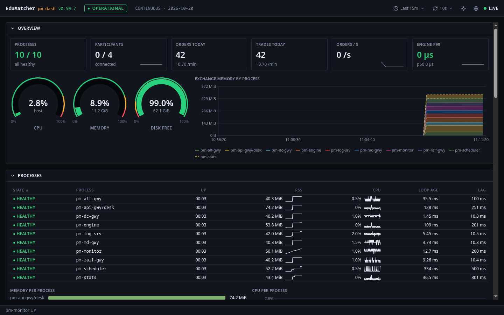
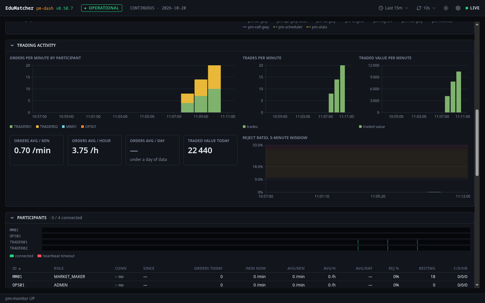

Operator Dashboard (pm-dash)¶
Learning objectives
After reading this page you will understand:
- What the Operator Dashboard is for, and how it relates to
pm-monitor - How to start it with the rest of the exchange, on its own, or for development
- What each of the eight rows shows, and how to read its colours
- How the time picker, the refresh setting and the session clock work
- How to open a process, participant or order book in detail, and share that view
- How to configure it, and what to do when it shows nothing
Overview¶
The Operator Dashboard (pm-dash) is a browser view of the whole
exchange, in the style of a Grafana dashboard: every process's health,
trading activity, participants, order books, gateways and events, live and
over time. It answers the question an operator asks first, from across the
room:
Is the exchange OK — and if not, where?
It shows what pm-monitor knows. pm-monitor
judges every process and the exchange, watches the thresholds and keeps the
history in metrics.db; the dashboard draws its live snapshot (once a
second) and that history. It judges nothing itself, so it never disagrees
with pm-monitor-cli status.

The overview row says whether the exchange is OK at a glance: processes up, participants connected, today's orders and trades, the order rate and engine latency, the host's CPU, memory and disk, and the exchange's memory over the picked time range.
| Component | Role | Type |
|---|---|---|
pm-monitor |
Judges health, computes rates, evaluates thresholds, publishes health.snapshot and health.event on port 5611, writes metrics.db |
Long-running process |
pm-dash bridge |
One subscription to pm-monitor, read-only metrics.db access, the WebSocket to every open tab, the history API |
Long-running process |
pm-dash web |
The dashboard in the browser | Browser application |
flowchart LR
MON["pm-monitor"] -->|"health.snapshot / health.event<br/>(PUB :5611)"| BRIDGE["pm-dash bridge"]
MON -->|"writes"| DB[("metrics.db")]
BRIDGE -->|"read-only"| DB
BRIDGE -->|"WebSocket + REST<br/>(:8095)"| TAB1["browser tab"]
BRIDGE --> TAB2["browser tab"]The dashboard is strictly read-only. It never writes metrics.db, sends
nothing to pm-monitor or any other process, and can be stopped at any time
without affecting the exchange. Everything it shows is also available from
pm-monitor-cli.
Running the dashboard¶
The dashboard needs pm-monitor, which every built-in pm-opctl-cli
profile except micro starts (see
Starting pm-monitor).
Option 1 — The whole stack (recommended)¶
The dashboard starts with the exchange and the other web GUIs, and opens on http://localhost:8095:
- A released install (no checkout, no toolchain): the one-command
install in Installation
starts it;
./edumatcher.sh urlslists it as "Operator Dashboard". - From a source checkout:
make up-allindeployment/docker/(see Container Deployment Walkthrough).
In both, the dashboard reaches pm-monitor over the container network and
reads metrics.db and the deployed configuration from the exchange's data
directory, mounted read-only. There is nothing to configure.
Option 2 — This app alone, in a container¶
When the exchange runs on this machine outside a container:
cd web-apps/dash-gui
export EDUMATCHER_DATA_DIR=~/.local/share/edumatcher # where metrics.db lives
make up # builds the image and starts it on http://localhost:8095
make logs # follow the bridge's output
make down
The data directory is mounted read-only. pm-monitor binds 127.0.0.1 by
default, which a container cannot reach; start the exchange with
EDUMATCHER_GATEWAY_BIND_HOST=0.0.0.0 (or set monitor.bind_address), and
set MONITOR_HOST if pm-monitor runs on another machine.
Option 3 — Local development¶
cd web-apps/dash-gui
make install
make dev # bridge on 127.0.0.1:5195, Vite on http://localhost:8195
Against the containerised exchange, publish pm-monitor's port and take the
bridge's environment from the stack:
cd deployment/docker
make up-all ZMQ=1 # also publishes 5611 on the host
eval "$(make -s dev-env GUI=dash-gui)"
cd ../../web-apps/dash-gui && make dev
Reading the dashboard¶
The top bar¶
From left to right: the version, the exchange status (OPERATIONAL,
DEGRADED, IMPAIRED or DOWN — pm-monitor's verdict, see
How health is judged), the
session indicator, then the time range, the refresh
setting, the theme, the settings, and the connection: LIVE while the
browser is connected to the bridge.
The session indicator is the one every EduMatcher GUI shows, as in the
Trading GUI: the session phase as a coloured badge, the next phase and the
time left to it (Continuous → Closing Auction in 03:08), and the clock in
the exchange session timezone. Hover it for the trading date. The bridge
reads the phase from pm-md-gwy (CALF, CALF_HOST/CALF_PORT), not from
pm-monitor; the badge reads Unknown until pm-md-gwy has reported it,
and whenever it cannot be reached.
When the figures stop being live, a red banner says why and since when —
"pm-monitor down — data frozen at 11:42:05", or the bridge is unreachable
and the browser is reconnecting — and the panels dim. The last figures stay
on screen; they are not cleared. The footer always shows whether the bridge
receives pm-monitor's snapshots.
Time¶
- The time range (
Last 5mtoLast 7d) sets the window of every chart. It is in the address bar as?from=now-1h, so a link opens on the same window. - Live figures — every tile, gauge and table — arrive once a second, whatever the time range says.
- Refresh (off, 10 s — the default — 30 s, 1 min, 5 min) is how often the charts ask for their history again. 10 s is the finest history there is.
- Every time shown is on the exchange's session clock
(
locale.session_timezone), not your browser's: an operator in another timezone sees the same times as the trading date and the logs.
Hovering a chart draws the same vertical line on every chart, so you can line up a CPU spike with a burst of orders. Process state changes, threshold breaches, session changes, halts and resumes are thin coloured markers on every chart; hover one for what happened.
Colours¶
Every colour is pm-monitor's verdict: a tile, gauge or table cell turns
amber (WARN) or red (CRIT) when pm-monitor reports that rule in breach, and
the processes tile follows the exchange status. The coloured bands drawn on
gauges and charts are the rules themselves, as configured in
monitor.thresholds; hover a tile or gauge for its definition.
The two can differ for a moment, on purpose: pm-monitor raises a breach at
once but clears it only after three readings below the threshold, and judges
some rules only above a minimum (the reject ratio from 20 requests, heap
garbage from a minimum book size). A value inside a band with no colour is a
value pm-monitor does not consider a breach — yet. See
Thresholds and events.
Every state is also shown in words and a glyph (● HEALTHY, ◐ DEGRADED, ◆ HUNG, ✕ DEAD …), never by colour alone.
Rates and their windows¶
An order or trade rate is always one of four, and each tile or column says which: now (the last 60 seconds), avg / min (the last 60 minutes), avg / hour (today's total over the hours the session has been open) and avg / day (the last 7 trading days). They answer different questions, so "0.70 /min" beside "3.78 /h" is not a contradiction: the last hour was quieter than the day.
The nine rows¶
Each row folds away with its title; the browser remembers which are folded.
| Row | What it shows |
|---|---|
| Overview | Processes up (and which are not), participants connected, orders and trades today, orders per second and engine p99 latency (order entry) with their last minute; the host's CPU, memory and free disk; the exchange's memory by process over the range |
| Session schedule | The same timetable as TapeDeck's Session view: this week's hours with bank holidays, today's phases with the current one lit and the exchange's time on the day, and the next bank holiday that closes the exchange or shortens its hours. Read from pm-api-gwy with the read-only key (PM_DASH_API_KEY); without one the row says the timetable is unavailable |
| Engine latency | How long the matching engine takes per message over the last minute: order p50 and p99 with the number of samples behind them, the p99 with garbage-collection time taken out, the p99 of every other message, the longest GC pause and the share of time in GC. Below, the order latency and the longest GC pause over the range. See Reading engine latency |
| Processes | Every process: state, uptime, memory and CPU with their recent trend, loop age and lag. Participant bots are listed after the exchange's own and never affect its status. Memory per process, and CPU per process over the range |
| Trading activity | Orders per minute by participant (the top eight and "other"), trades and traded value per minute, the order averages, the reject ratio as pm-monitor judges it, and today's rejects by reason — what the engine said no to (ORDER_NOT_FOUND, MARKET_CLOSED, MM_MAX_SPREAD …) |
| Participants | How many participants were connected over the range, with heartbeat timeouts as red lines: a drop of many at once points at a gateway or the network. Then the table: role, connection, orders today and their rates, reject %, resting orders, connects / disconnects / heartbeat timeouts today, and the participant's own connection lane over the range (sort that column to bring the most disconnected to the top). "avg/day" shows "—" until there is a full day of history |
| Order books | The number of books and their estimated memory; per symbol: resting and stop orders, price levels, memory, heap garbage, trades today, and whether it is halted |
| Gateways & infrastructure | Clients per gateway against its limit, API WebSocket sessions and dropped events, slow-client disconnects, log server intake, feed gaps, the data files' sizes, and the engine's internal diagnostics |
| Event log | Every health event, newest first, filterable by kind: connects and disconnects, state changes, threshold breaches, session changes, halts |
Reading engine latency¶
The engine times 1 message in 16 and reports percentiles over the last minute, at most 1024 timed messages. Three things keep the figures honest:
- Order entry is timed apart from everything else. New orders, cancels, amends, quotes, combos and OCOs are order latency. Heartbeats, connects, queries and admin commands are other messages: a book snapshot of a deep book can take milliseconds, and mixed in it would make the order p99 look like matching is slow.
- The p99 shows how many samples it stands on. Below 100 samples a p99 is simply the slowest of them; the row header then says so. At a few orders a minute this is normal.
- Garbage collection is timed separately. Every collection is timed, not only the sampled messages, so Longest GC pause never misses a stall. p99 without GC is the order p99 with the collection time inside each message taken out: when it sits far below the order p99, the slow messages were slow because Python was collecting garbage, not because of matching.
The maximum is the slowest timed message, so it can miss outliers that were not sampled; the longest GC pause and the process's loop lag cover the worst stalls.

Per-minute bars count a minute once it is over, so the current minute appears at the next refresh after it closes.
Drawers: one process, participant or book¶
Click a row in the processes, participants or order books table (or select it and press Enter) to open its drawer on the right:
- A process: its state and figures, its memory, CPU, threads, file descriptors, loop age and loop lag over the range, every application metric it reports (for the engine, those not per participant or symbol — those are in the participant and book drawers), its events, and Logs in log-gui — its log records in the Log Operator Console.
- A participant: its connection and figures, its orders, rejects and fills per minute, its resting orders, and its connects and disconnects.
- An order book: its figures, trades and traded value per minute, resting orders, memory and heap garbage, its halts and resumes, and Book in book-gui — the book in the Order Book Viewer.
Escape or the close button closes it; the dashboard stays live behind it.
Each drawer has its own address — /process/<key>, /participant/<id>,
/book/<symbol>, with the time range — so in an incident you can paste
the link to exactly what you are looking at, for example
http://localhost:8095/process/pm-engine%40edumatcher?from=now-6h.

Settings¶
The gear icon holds the theme (dark or light), the font size (for a wall display across the room), and whether a stat tile shows its level by colouring the value or its whole background. All three are remembered per browser.
Configuration reference¶
The bridge is configured from its environment. In both container stacks these are already set; you need them only for Option 2 or 3.
| Variable | Default | Meaning |
|---|---|---|
HOST / PORT |
127.0.0.1 / 5195 |
Bridge bind address (the container uses 0.0.0.0:8095) |
MONITOR_HOST |
127.0.0.1 |
Where pm-monitor's PUB socket is reachable (monitor.host) |
MONITOR_PUB_PORT |
5611 |
monitor.pub_port |
MONITOR_DOWN_AFTER_SEC |
3 |
No snapshot for this long and pm-monitor is shown down |
CALF_HOST / CALF_PORT |
127.0.0.1 / 5570 |
pm-md-gwy, for the session phase in the top bar |
API_GATEWAY_URL |
http://127.0.0.1:8081 |
pm-api-gwy's dashboards instance, for the Session schedule row |
PM_DASH_API_KEY |
unset | The read-only API key (the credential with gateway_id: null); the stacks resolve it at start |
METRICS_DB_PATH |
<data dir>/metrics.db |
pm-monitor's history, opened read-only |
CONFIG_ARTIFACT_PATH |
<data dir>/ref_data/engine_config.json |
The deployed configuration, for the threshold bands |
LOG_GUI_URL / BOOK_GUI_URL |
unset (http://localhost:8091 / :8094 in the stacks) |
log-gui's and book-gui's addresses as your browser reaches them; set, the drawers link there |
CORS_ORIGIN |
* |
Restrict when exposed beyond localhost |
MAX_WS_CLIENTS |
200 |
Browser tabs beyond this are refused |
LOG_SRV_HOST / LOG_SRV_PORT |
127.0.0.1 / 5600 |
The bridge's own logging to pm-log-srv (optional) |
In the container stacks, DASH_GUI_PORT in .env moves the dashboard off
8095, and LOG_GUI_URL / BOOK_GUI_URL there change the drawers' links —
needed when you open the GUIs from another machine.
Security notes¶
- The dashboard has no login. It shows no credentials and changes nothing, but it does show the exchange's participants and activity.
- The stacks publish it on
127.0.0.1only. SettingBIND_ADDR=0.0.0.0opens it — with every other GUI — to your network; do that only on a network you control, and setCORS_ORIGINto the dashboard's own address. - The bridge holds the read-only API key for the Session schedule row; it never sends it to the browser.
pm-monitor's ports are not published by the stacks; the dashboard reaches it over the container network.ZMQ=1(orEM_ZMQ=1) publishes the snapshot feed (5611) for tools on the host, never the beacon intake (5610), which would let anything report fake health.
Troubleshooting¶
| Symptom | Likely cause | What to do |
|---|---|---|
| Banner "pm-monitor down" and nothing ever shown | pm-monitor not running, or not reachable at MONITOR_HOST:MONITOR_PUB_PORT |
pm-opctl-cli list; pm-monitor-cli status; outside a container, open it with EDUMATCHER_GATEWAY_BIND_HOST=0.0.0.0 |
| Banner "pm-monitor down" after it worked | pm-monitor stopped or hung |
pm-opctl-cli list; restart it. The dashboard recovers by itself |
| Live figures, but every chart says "No data in this range" | The bridge cannot read metrics.db, or the exchange has only just started (the first history row is written after 10 s) |
curl localhost:8095/api/bridge/status shows metricsDb; check METRICS_DB_PATH and the mount |
| Per-minute bars stay empty | The minute is not over yet, or refresh is off | Wait for the minute to close, or set refresh to 10 s |
| Session schedule row says "Timetable unavailable" | No read-only key, or pm-api-gwy not reachable at API_GATEWAY_URL |
curl localhost:8095/api/reference/schedule shows the gateway's answer; set PM_DASH_API_KEY (the stacks do it for you) |
Bands differ from monitor.thresholds |
The bridge does not see the deployed configuration | Check CONFIG_ARTIFACT_PATH; curl localhost:8095/api/thresholds says "source": "artifact" when it does |
Changed monitor.thresholds, colours did not follow |
pm-monitor reads its thresholds at start |
Restart pm-monitor. The bands show the new values within one refresh interval |
| No "Logs in log-gui" / "Book in book-gui" link | LOG_GUI_URL / BOOK_GUI_URL unset or not http(s)://… |
Set them as your browser reaches those GUIs |
| A pasted link shows "No process … in the latest snapshot" | That process, participant or book is not in this exchange (another host name, a stopped bot) | Open the dashboard and pick it from its table |
pm-monitor DEGRADED, a metrics_store_errors breach |
pm-monitor cannot write its history (read-only or full data directory) |
See Health Monitoring; the live figures are unaffected |
Container cannot read metrics.db on Linux |
An SELinux-enforcing host and a mount without :z |
The supplied compose files carry :ro,z; keep it in your own |
Where to go next¶
- Health Monitoring (
pm-monitor) — the health states, thresholds, rates andmetrics.dbthe dashboard draws - Log Operator Console (
pm-log-ui) — what a process logged - Order Book Viewer (
pm-book) — one book in full depth - Running the Exchange —
pm-opctl-cliprofiles